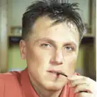
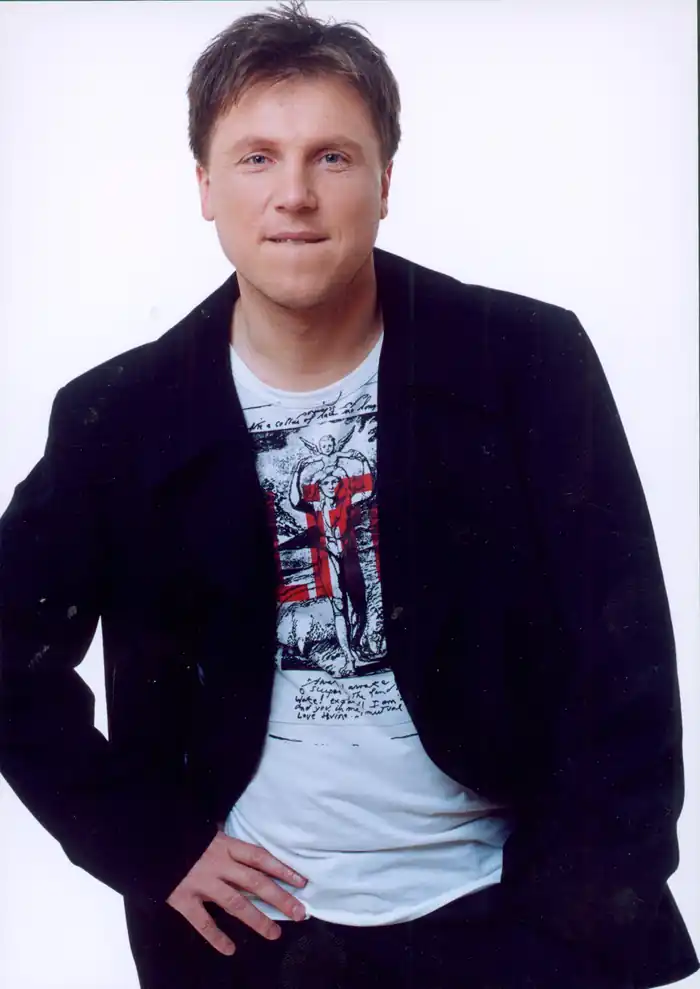
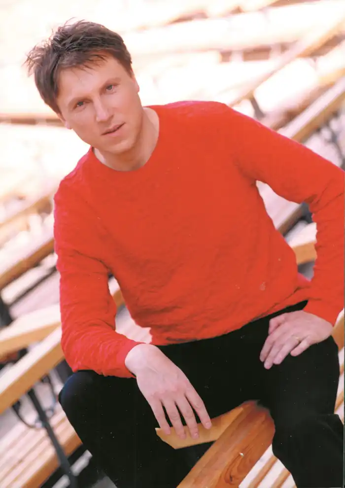

У 1965 році 14 народився поет і сценарист Євгеній Юхниця. З дитинства мав хист до літератури, але реалії того часу робили з нього математика. Та вчителі мови і літератури помічали його читацький хист, запис у 5-ти бібліотеках міста, звідки хлопчина виходив завжди з 5-6 книжками, і давали йому читати те, що важко було знайти в Жмеринці. Після пошуку себе, вже на останніх курсах у економічному інституті Євгеній пише студентські сценарії, КВН-ни, тощо. У будівельних загонах – сценарії вечорів, тексти пісень, сатири, виробничих іроній. У 1994 році майбутній поет визначається з основною долею у літературі. І, хоча його ще з десяток років робота відривала від остаточного занурення у поезію, сценаристку, Євгеній пише незабутні поезії, які стали своїми у народі. Кількамовний, в дитинстві – українська мова, у школі та інститутах – російська. Пізніше – кілька європейських. Каже, що сам вже не пам'ятає книжки, які видавалися з його віршами і п'єсою. Як вже й не пам'ятає через тиждень – що вимальовував нещодавно. Працює у десятках жанрів. У 2021 році надихався місячними поезіями, у січні 2022р. майже завершив 10-річну збірку "Тканини самотності". Надихається новим середовищем.
Страждає, що може зупинити розмову, виступ, процес, і починає довго щось записувати. Потім вибачається, але помічає, що люди відносяться дивно. Сам себе вважає – скоріше дитячим поетом. Друкувався у дитячих журналах, відомо, що готує три грандіозні поетичні збірки для дітей. Анатолій Костецький його вів майже до самої своєї смерті, наполягав, аби Євгеній сконцентрувався на дитячій і сценарній творчості.
До Євгена прибиваються собаки (зараз на дачі один), коти: один прибився у лісопарку на Борщагівці (м. Київ) у 2006 році, чорного кольору, а другий нещодавно у 2019 році біля дачної ділянки – світло-рудий. Сам Євгеній весь час повторює, що намагається відобразити, відмалювати сучасність, звернути увагу засобами літератури на позитивне, батьківщинолюбне, творче і порядне, неоднозначне.